Introduction to Microcontrollers and Microcontroller Architecture#
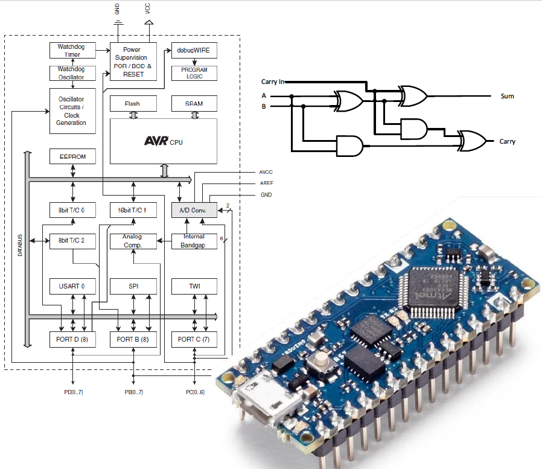
50 years of teaching microprocessors at Swansea![1]#

Started in 1972/1973 by Prof. David Aspinall and Dr. Erik Dagless, using bespoke equipment based on the Intel 8008.
Always using 8-bit micros such as Intel 8008, Intel 8085, Motorola 68HC11, Motorola 68HCS08…
Take-home lab, developed by Dr Davies, in 2020, used the Arduino Nano which is based on the Atmel (now MicroChip) ATmega328
One of our former students, Prof Sir Andy Hopper, asked why we are not teaching using the ARM processor which he helped develop.
And so the quest for a new microcontroller laboratory began.
Spring 2021 - the launch of a new microcontroller, the RP2040 which is packaged into a small module, costing only three pounds.
This is the microcontroller for our new EG-252 lab and will also be used in the new module EG-3082 Embedded Systems launching this year,
You will therefore be using microcontrollers throughout this program
Introduction#
In this week’s lecture, you will be given an introduction to microcontrollers focusing on what a microcontroller is, where they can be found and how they can be described using the their architecture. The lecture then moves on to introduce the Atmel ATmega328 microcontroller, which will be used in the practical sessions in this course, looking at its core architecture including the function of the arithmetic logic unit and registers.
Topics Covered in this Lecture#
{kind=link}
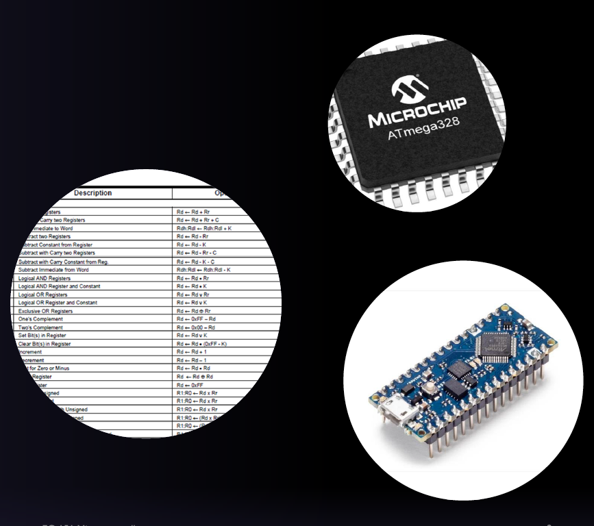
What is a Microcontroller?#
{kind=link}
A microntroller is a compact integrated circuit designed to govern a specific operation or set of operations within an embedded system.
At a high level of abstraction, a microntroller includes three core components within a single chip:
A central processing unit (CPU)
Memory, and
Input/output (I/0) peripherals
Where are Microcontrollers Used?#
{kind=link}
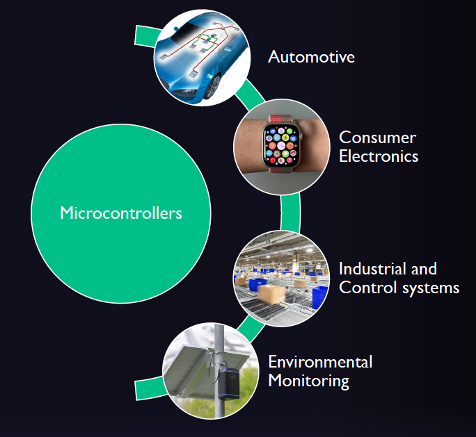
Microcontrollers are used in the automotive industry, consumer electronics, industrial and control systems, and environmental monitoring and many other areas of engineering.
Automotive applications#
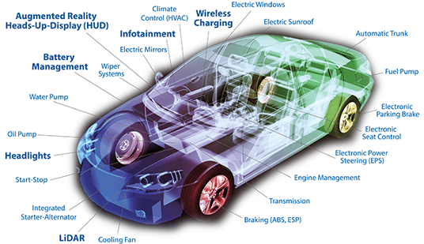
Original image source: www.linkedin.com/pulse/microcontrollers-used-automotive-applications-field-amin-agina (no longer accessible).
|
|
Consumer electronics#

Image source: www.electronicsweekly.com/blogs/distribution-world/communities/innovative-smartwatch-challenges-apples-watch-design-2015-10
|
|
Industrial applications#
{kind=link}
Image source: investinfrance.fr/high-technology-industry/robotic-arm-catch-for-electronic-assembly-line-the-robot-for-sm/ [No longer available online]
|
|
Environmental monitoring#
{kind=link}
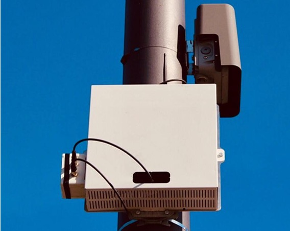
Image source: www.openpr.com/news/1799966/hawa-dawa-installs-the-largest-air-quality-measurement-network
|
|
Microcontroller Market Forecast#

Source: www.precedenceresearch.com/microcontroller-mcu-market
How do we Describe Microcontrollers?#
Architecture#
Definition from the Oxford English Dictionary architecture
Computing. The conceptual structure and overall logical organization of a computer or computer-based system from the point of view of its use or design; a particular realization of this[2].
Number of Bits#
{kind=link}
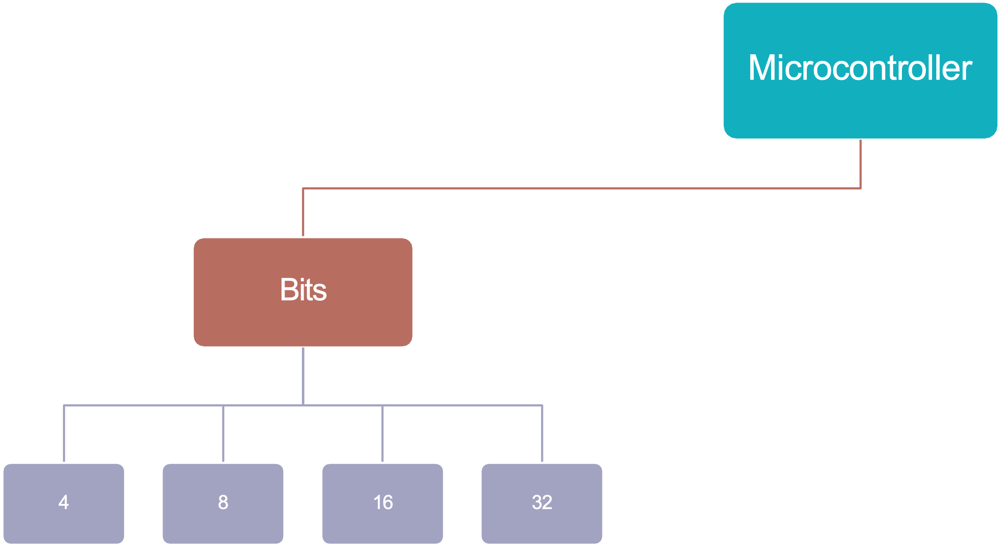
Categorizing Microcontroller Units (MCUs) as 8-, 16-, or 32-bit designs is one way of classifying their performance capabilities.
The number of bits identifies the size of the registers, the number of available memory addresses and the largest number that can be processed/represented.
As an example, in an 8-bit MC
Each register is 8-bits (or one byte) wide.
There are \(2^8\) (or 256) possible memory addresses
There are \(2^8\) integers that can be represented (0 to 255).
Microcontrollers with more bits, for example 16- and 32-bit MCUs have correspondingly more bits per register, more available memory addresses, and can handle larger numbers compared with their 8-bit counterparts.
An introduction to data representation follows in Introduction to Data Representation.
Fig. 1 shows the data memory map of the Atmel Atmega328 which is an 8- bit MCU.
It has \(2^8\) or 256 available memory addresses from 0x0000 – 0x00FF which covers:
32 general purpose registers,
64 I/O registers, and
160 Extended I/O registers
{kind=link}
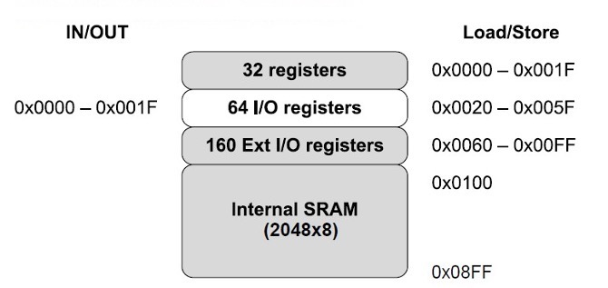
Fig. 1 Memory map for the Atmel Atmega328 MCU#
Applications of 8-bit and 32-bit MCUs#
![Venn diagram of the 8-bit MCU vs. 32-bit MCU benefits from a general perspective, as direct comparisons of all features combined are relative to tradeoffs. In general, the 8-bit MCU has been lower cost and smaller in size than the 32-bit MCU, but 32-bit MCUs are close to competing on cost and both have at least one “specimen” of a similarly minute physical size. In overall power consumption, the slower 8-bit MCUs will always trump the faster 32-bit MCUs as long as manufacturers stay on their game.](http://lreese.dotsenkoweb.com/wp-content/uploads/2019/04/Fig-1-VennDiagraml-1024x713.jpg)
Source: http://lreese.dotsenkoweb.com/2017/07/31/iot-choosing-8-bit-vs-32-bit-mcus
Market share of 8-bit, 16-bit and 32-bit MCUs in 2021#

Source: www.precedenceresearch.com/microcontroller-mcu-market
Memory#
{kind=link}
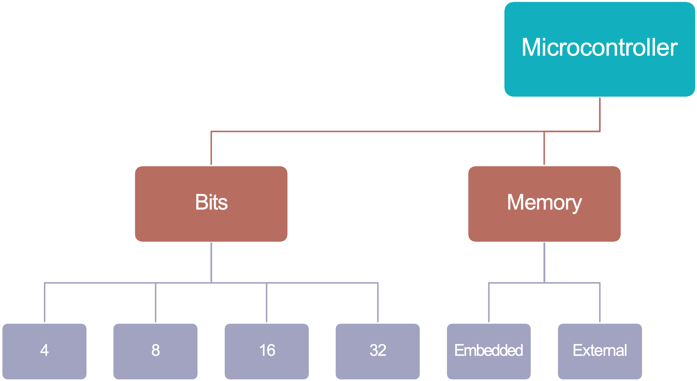
Embedded vs external memory#
Memory in modern microcontrollers can be classified as embedded or external dependent on whether this is physically located within the MCU itself or is connected separately.
For most microcontroller-based applications, the internal memory is enough, however applications which gather or buffer large amounts of data may also need external memory in the form of SD cards, M.2 drives and similar.
A Raspberry Pi 4 Model B is illustrated in Fig. 2. It has both internal and external memory.

Fig. 2 Raspberry Pi 4 Model B#
Source: www.hackatronic.com/raspberry-pi-4-specifications-pin-diagram-and-description.
Volatile vs non-volatile embedded memory#
Broadly speaking embedded memory that is found in a microcontroller can be classified into two categories:
Volatile: data is lost when power is removed – this is temporary storage.
Non-volatile: data is retained when power is removed – this is permanent storage.
Volatile and non-volatile memory can be further classified as illustrated in Fig. 3.
{kind=link}
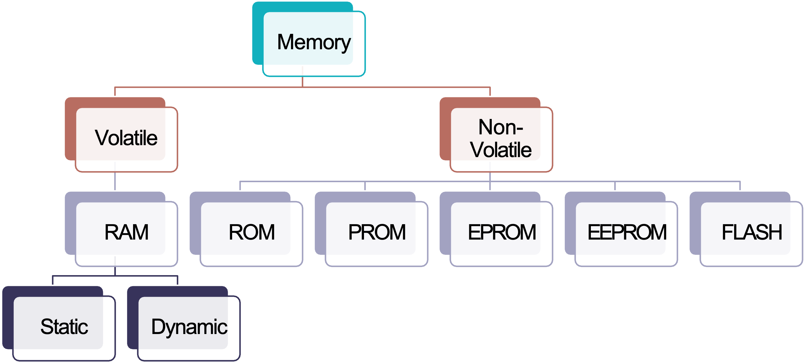
Fig. 3 Classification of volatile and non-volatile memory.#
Instruction Set Architectures#
{kind=link}
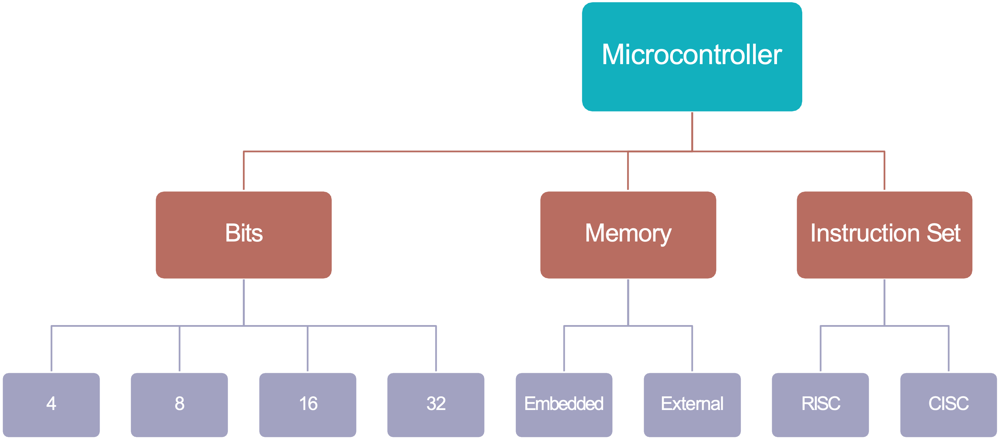
The instruction set architecture (ISA) describes the format and operation of instructions the microcontroller can perform and a microcontroller will often be categorized as having a RISC based or CISC based architecture.
Reduced instruction Set Computer (RISC)#
A RISC is a device with a small, highly optimized set of instructions which utilizes registers and a highly regular instruction pipeline, allowing instructions to be completed in a low number of clock cycles. In short, several instructions may need to be run to perform a task and this may complicate the coding.
Complex Instruction Computer (CISC)#
A CISC is a device in which single instructions can execute several low-level operations or are capable of multi-step operations or addressing modes within single instructions. In this instance a program may be easier to read by a human, but the timing will be irregular and difficult to debug or be monitored by a machine.
Example#
As an example, consider the case where you want to multiply two numbers stored at addresses 0x0010 and 0x0011 respectively.
On a RISC based architecture microcontroller the code would look something like:
LDS r18, 0x0010
LDS r19, 0x0011
MUL r18, r19
However, on a CISC based architecture machine the multiply instruction may be able to perform the memory access instructions within its execution, meaning the code would look like this:
MUL 0x0010, 0x0011
Memory Architectures#
{kind=link}
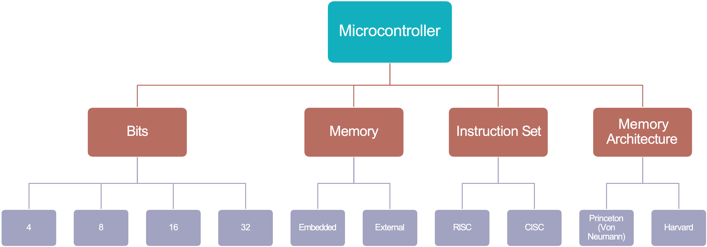
Memory architecture is a different concept from embedded and external and volatile and non-volatile memory. Memory architecture classifications describe where program instructions and data are stored and how they are accessed.
There are two categories, Von-Neumann and Harvard.
Von-Neumann (Princeton) architecture#
In a Von-Neumann architecture, the same memory and bus are used for both data and instructions used by the CPU and peripherals as illustrated in Fig. 4.
{kind=link}
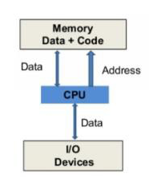
Fig. 4 The Von Neumann architecture#
Harvard architecture#
The Harvard architecture stores machine instructions and data in separate memory units that are connected to the CPU and peripherals by different busses as illustrated in Fig. 5.
{kind=link}
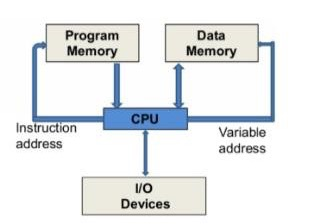
Fig. 5 The Harvard architecture#
Modified Harvard architecture#
Most modern microcontrollers don’t have a physical separation between the memory spaces used by data and instructions, and therefore could be described as Von Neumann for this reason. However, since these microcontrollers often use separate busses for data and instructions, a better way to represent these is as a modified Harvard architecture[3].
How is a Microcontroller Described?#
In summary, the final MCU classification shown in Fig. 6 represents some of categories under microcontroller architecture which are focused around the system itself.
There are further classifications as you move towards either the circuit design or the embedded system application.
Fig. 6 Classification of microcontroller systems#
System or Core Architecure#
In general, most microcontroller manufacturers will present a system wide, or core architecture in the form of a diagram which will appear early on in the data sheet for the device.
Atmel ATMega328P AVR#
For example, Fig. 7 is taken from Atmel ATMega328 data sheet[4] and shows a block diagram of the Advanced Virtual RISC (AVR) architecture.
{kind=link}
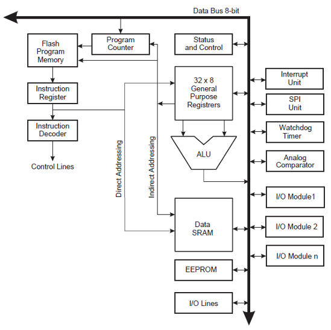
Fig. 7 Block Diagram of the AVR Architecture (Source: Figure 6.1, Page 9 of the Atmel ATMega328P data sheet)#
NXP HCS08 MCU#
As another example, the block diagram shown in Fig. 8 represents the architecture of the NXP (formally Motorola) HCS08 MCU.
This MCU, which was used on this module before the Arduino was adopted, does not have a bank of general purpose registers. Instead it has a single working register, known as the accumulator, which is involved in most computations that the MCU performs.
{kind=link}
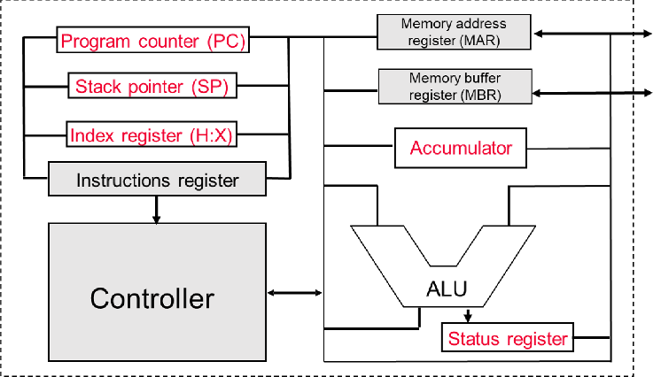
Fig. 8 Block Diagram of the NXP HCS08 Architecture#
The Atmel ATmega 328 Microcontroller#

The Atmel® ATMega328/P is a low-power CMOS 8-bit microcontroller based on the AVR® enhanced RISC architecture.
Introducing the Atmel ATMega328 MCU#
This is an 8-bit CMOS microcontroller based on the AVR® enhanced RISC architecture with 131 instructions.
It has 2KB of Internal SRAM, 32 KB of Flash Memory and 1 KB of EEPROM.
It has 32 General Purpose Registers.
It can achieve up to 20 MIPS at 20 MHz (maximum clock frequency).
There are 8 Analog I/O pins connected to 10-bit analogue to digital converter (ADC).
There are 22 Digital I/O pins (6 capable of pulse-width modulation (PWM)).
The AVR core uses a Harvard memory architecture – with separate memories and busses for program and data.
Arithmetic Logic Unit#
The Arithmetic Logic Unit (ALU) (Fig. 9), is the part of the processor that performs arithmetic and logic operations on numbers from the storage area – it is essentially the “brain” of the microcontroller.
{kind=link}
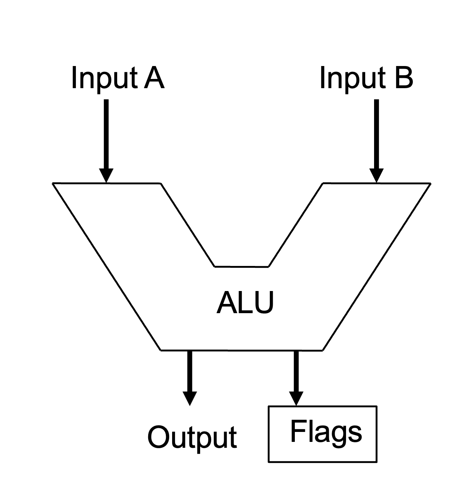
Fig. 9 General purpose arithmetic logic unit (ALU)#
First, numbers are read from storage into the ALU’s data input ports.
Once inside the ALU, they’re modified by means of an arithmetic or logic operation (
ADD,SUB,AND,OR…), andFinally, the data is written back to storage via the ALU’s output port.
Example instruction#
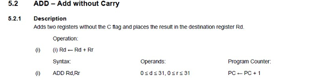
Example of the ALU from the 74LS181#
The 74LS181 is a 4-bit microcontroller that supports 16 logical and 16 arithmetic operations.
You do not need to understand Fig. 10, it is just and example to show that an ALU isn’t just a black box. Rather it contains complex logic circuitry by means of which it performs its operations.
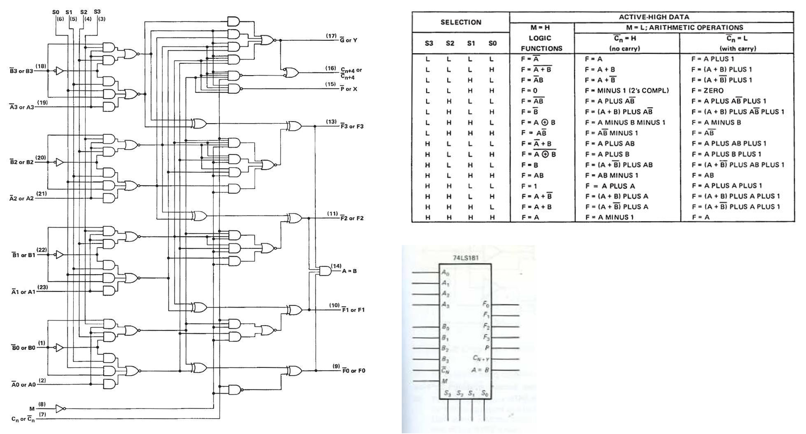
Fig. 10 The ALU for the 74LS181 MCU#
Registers#
A register is a group of memory bits with special addressing characteristics which is often used for a particular purpose.
In most modern processors, regardless of architecture, data is loaded from a larger memory space into special registers where it is used for arithmetic operations, manipulation or testing by various machine instructions.
Data is then temporarily held in a register until it is overwritten, or the immediate instruction stores it back to main memory.
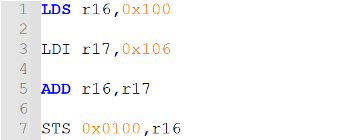
Registers in the ATMega328 MCU#
The Atmel ATmega328 is an 8-bit microcontroller and has 256 addressable registers within the user data space.The first 32 locations address the Register File, the next 64 location the standard I/O memory and then the remaining 160 locations for Extended I/O memory.
Fig. 1 summarizes the memory map of the ATMega328 MCU. Fig. 11 shows part of the full memory map that is given in pages 275-280 of the Atmel ATMega280/P data sheet.
{kind=link}
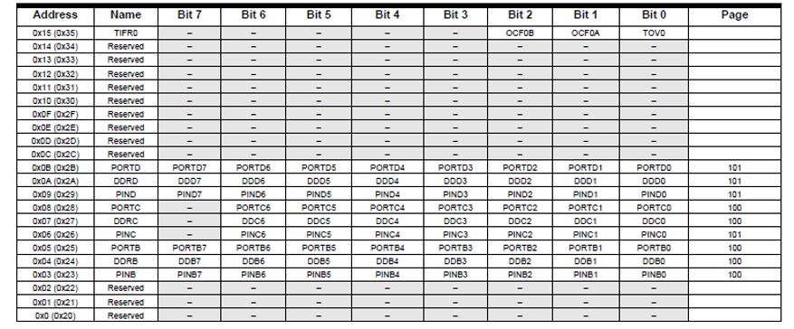
Fig. 11 Part of the memory map of the Atmel ATMega328/P MCU#
The Register File#
The Register file (see Fig. 12) contains 32 x 8-bit wide registers that are often referred to as general purpose or working registers in the CPU.
{kind=link}
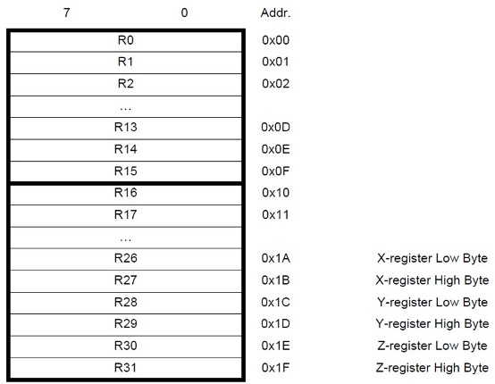
Fig. 12 The register file for the Atmel ATMega328/P MCU#
Each register is also assigned a data memory address, mapping them directly into the first 32 locations of the user data space.
Most of the instructions operating on the Register File have direct access to all registers, and most of them are single cycle instructions, however:
R0–R15are not available for all instructions, andR26–R31have some added functions as pointer registers.
Using the Register File#
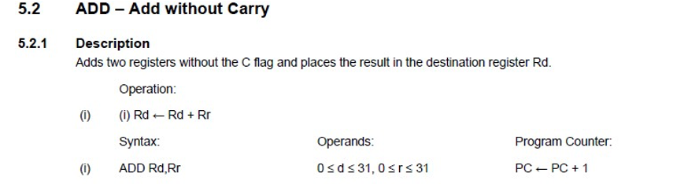
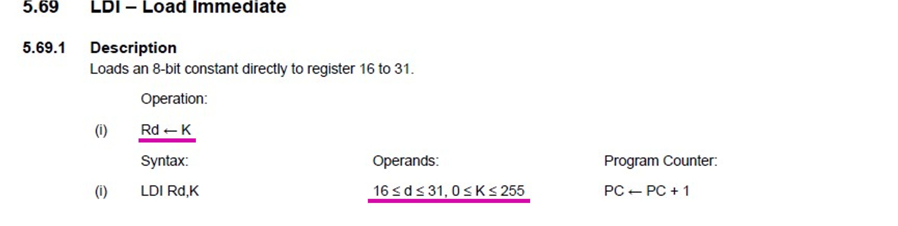
X- Y- Z-Pointer Registers#
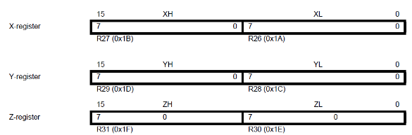
In addition to acting as general purpose
registers, R26 - R31 can be used as 16-bit address pointers and
referred to as the X-,Y-, Z-registers. These pointers can be used to
indirectly address the SRAM portion of the data space.
The start address of SRAM is 0x0100, this cannot be accessed with 8-bits (maximum is 0x00FF).
Note: We will look at this in more detail at the end of the module but this approach can be useful to access sets of data where we don’t necessarily know the address.
Summary#
In this lecture we have:
Familiarized ourselves with what a microcontroller is and where they are used.
Introduced describing a microcontroller by considering parts of its architecture and
Began to look at the Atmel ATmega328 microcontroller focusing on its register file and the general-purpose registers.
On Canvas#
There is a quiz which tests your recall of the topics covered in this lecture
Next week#
Next week we will look at Architecture of the Atmel ATmega 328 Microcontroller.